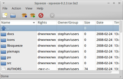

Squeeze
Archivierte Anleitung
Dieser Artikel wurde archiviert, da er - oder Teile daraus - nur noch unter einer älteren Ubuntu-Version nutzbar ist. Diese Anleitung wird vom Wiki-Team weder auf Richtigkeit überprüft noch anderweitig gepflegt. Zusätzlich wurde der Artikel für weitere Änderungen gesperrt.
Zum Verständnis dieses Artikels sind folgende Seiten hilfreich:
Squeeze  ist ein moderner, fortgeschrittener, schneller und einfach zu bedienender Archivmanager für Xfce. Das Programm wurde ursprünglich als einfache Alternative zu Xarchiver erstellt, aber seit 2008 erfolgte keine Weiterentwicklung mehr. Es unterstützt die folgenden unterschiedlichen Archivtypen:
ist ein moderner, fortgeschrittener, schneller und einfach zu bedienender Archivmanager für Xfce. Das Programm wurde ursprünglich als einfache Alternative zu Xarchiver erstellt, aber seit 2008 erfolgte keine Weiterentwicklung mehr. Es unterstützt die folgenden unterschiedlichen Archivtypen:
tar,
zip,
rar,
gzip,
bzip2 und
lzop
|  |
| Squeeze |
Installation¶
Squeeze kann bis Ubuntu 13.04 aus den offiziellen Paketquellen installiert [1] werden:
squeeze (universe)
 mit apturl
mit apturl
Paketliste zum Kopieren:
sudo apt-get install squeeze
sudo aptitude install squeeze
Bedienung¶
Nach erfolgreicher Installation kann das Programm bei Ubuntu-Varianten mit einem Anwendungsmenü über den Eintrag "Zubehör -> Squeeze" oder durch den Befehl squeeze gestartet werden [2]. Die Bedienung des Programms ist intuitiv zu erfassen:
| Bedienung | |
| Element | Bedeutung |
 | Neues Archiv erstellen. |
 | Archiv öffnen. |
 | Dateien / Ordner zum Archiv hinzufügen. |
| Archiv entpacken. | |
 | Dateien aus dem Archiv löschen. |
| Abbrechen des Vorgangs. | |
  | Navigation innerhalb des Archivs. |
Einstellungen¶
Unter "View" können verschiedenste Einstellungen vorgenommen werden. Dies geschieht durch (de)aktivieren der entsprechenden Option:
| Einstellungen | |
| Menüpunkt | Beschreibung |
| Navigation Style | Ansicht ändern |
| Show full path | Kompletten Dateipfad anzeigen. |
| Show mime icons | Bilder ein/ausblenden |
| Sort folders before files | Ordner vor Dateien anzeigen. |
| Sort text case sensitive | Auf Groß- und Kleinschreibung wird geachtet. |
| Rules hint | Jede zweite Zeile wird optisch hervorgehoben - zur besseren Übersicht. |
Die vorgenommenen Einstellungen werden in der Datei ~/.config/squeeze/squeezerc im Homeverzeichnis gespeichert.
Tastenkürzel¶
| Tastenkürzel | |
| Taste(n) | Funktion |
| Strg + N | Neues Archiv erstellen. |
| Strg + O | Archiv öffnen. |
| F5 | Aktualisieren |
| Strg + W | Geöffnetes Archiv schließen. |
| Strg + Q | Programm beenden. |
 Programmübersicht
Programmübersicht- Erstellt mit Inyoka
-
 2004 – 2017 ubuntuusers.de • Einige Rechte vorbehalten
2004 – 2017 ubuntuusers.de • Einige Rechte vorbehalten
Lizenz • Kontakt • Datenschutz • Impressum • Serverstatus -
Serverhousing gespendet von